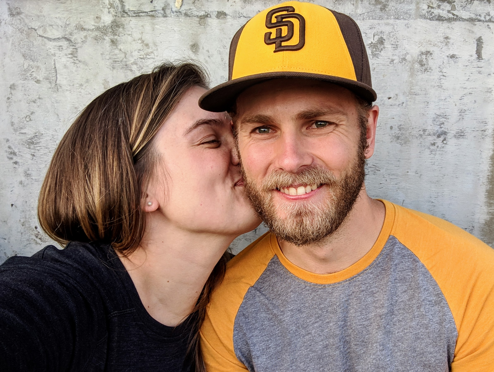
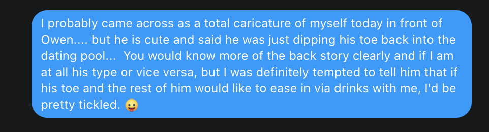

Meet Dana
- Full name: Dana Paige Seidel
(Note: Dana will be keeping her name)
- One word to describe: Ebullient
- Best thing Owen’s taught her so far: The Warner family pastime, Up & Down
- Fun Fact: I have a twin sister & PhD in Environmental Science!
- Natural State: Dreaming of wonderful futures
The story, as told by Dana:
My friend Juliet once told me that it was “both suprising and so natural” to see
Owen and I together. Surprising because we are such different people on the surface,
but so natural how we fit together when you look a little deeper. Maybe that’s why it took us sometime ourselves to see that we should be together.
We first met at a birthday party for a mutual friend, Stacey, Owen’s roommate at the time,
in July 2017. I spent most of the afternoon thinking Owen was actually Stacey’s
husband and not minding for a minute that he listen in while I jabbered about
dating horror stories with my girlfriends. Once set straight, I must have thought
he was cute and interesting because I promptly sent Stacey a message…

On Owen, I made an impression (as I am want to do) but perhaps not one as alluring as I had hoped … it took us another year (almost to the date!) and another one of Stacey’s
birthday parties for him to figure out that we should be dating.
Meet Owen
- Full name: Owen Lee Warner
- One word to describe: Strong-willed
- Best perk of marrying Dana: Endless homemade bread
- Favorite date night: Trying new beers at a local brewery
- Natural state: Firmly rooted in the present
The story, as told by Owen:
It certainly took me a while to realize that Dana is the person who I should be dating! But luckily I joined her bookclub and our monthly meetings gave us time to become friends and get to know each other beyond the first impressions. Luckily for me, Dana’s hints stopped being so subtle after a while and once we were together, it was clear to both of us the match was perfect!
Dana’s outlook helps me to envision a myriad of future goals together. I am blessed to have her as my partner for the many adventures to come!